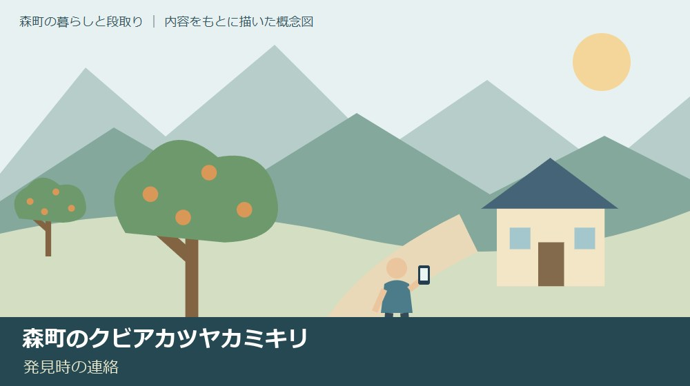
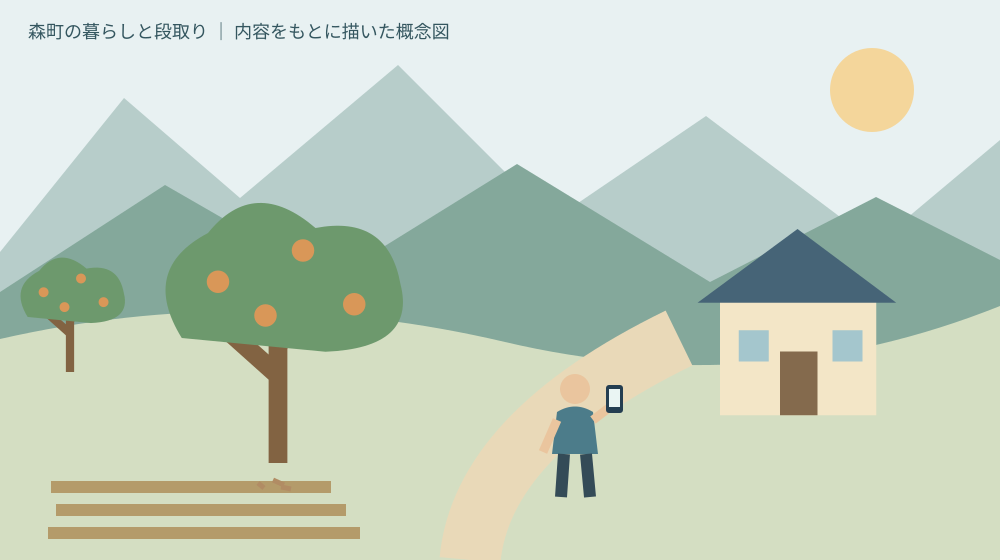
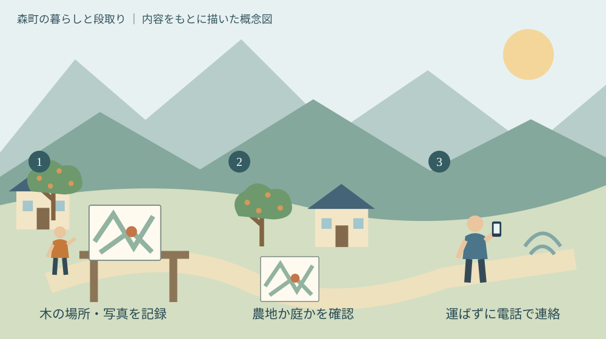

森町のクビアカツヤカミキリ｜発見時の連絡
／ 農地・山林・茶畑

Q. 怪しい虫を見つけたら、どこへ連絡すればいい？
A. クビアカツヤカミキリを見つけても、生きたまま運ばないでください。森町はその場での駆除と速やかな連絡を案内しています。農地では公式の連絡先一覧、農地以外では静岡県自然保護課（054-221-3332）が窓口です。疑わしい段階では安全な位置から写真と場所を記録し、判別を相談します。
果樹や庭木を守る人が、発見時に迷わないために
森町の畑や実家で木を管理している方は、剪定や草刈りのために何度も現地へ足を運んでいます。果実を収穫する木も、家族の思い出がある庭木も、手をかける人がいて残っています。外来害虫の警戒を伝えるときにも、その移動と作業の負担を増やすだけにはしたくありません。
大石浩之（磐田市／不動産業）です。この記事は、森町でウメ、モモ、サクラなどを管理する方に向けた、クビアカツヤカミキリ発見時の連絡案内です。虫の写真を見て自己診断する記事ではありません。疑わしいものを見たとき、何を記録し、どこへ相談するかを整理します。
2026年10月8日に森町公式「特定外来生物クビアカツヤカミキリについてのお願い」を確認しました。ページの更新日は同年9月15日です。県周辺の発生状況を背景に、警戒と早期発見への協力を呼びかけています。町内で発生したという発表として読むことはできません。
畑の保護は、動物による被害と昆虫による被害でも確認することが違います。電気柵の補助と設置条件を整理した記事とは対処の対象が異なります。柵を置いたから樹木の害虫も防げる、という受け止め方をしないよう分けて考えます。
公式案内｜警戒の呼びかけと発生確認を分ける
森町の案内は、クビアカツヤカミキリがサクラ、ウメ、モモなどを加害すると説明しています。樹木の枯死だけでなく、落枝や倒木による人的被害なども懸念されます。果樹の収穫だけの話ではなく、人が歩く場所の近くにある木も確認の対象になります。
県内で未確認という趣旨の記述は、町の案内が置かれた時点の状況説明として読みます。この記事では、それを2026年10月8日の静岡県全体の状況へ広げません。初回公表日や森町内の発見日は案内本文に記載されていません。更新日の表示だけから発生日を作らないことです。
私は、家族への共有文にも「森町で発見された」と書かず、「町が発見時の連絡を案内している」と書きたいと考えます。注意を引くために発生地域を広げると、現地の人の判断をかえって曖昧にします。警戒情報と実際の観察記録を分ける方が、相談先へ伝えやすくなります。
木が弱っている原因を、この記事だけで特定することもできません。枯れ枝や木くずが見えることと、クビアカツヤカミキリの被害であることは同じではありません。私は、見たものをそのまま記録し、虫の名前を無理に確定しない形で相談するのがよいと考えます。
生きたまま持ち運ばない｜連絡先は農地と農地以外で分かれる
森町公式は、クビアカツヤカミキリが特定外来生物であり、生きたままの運搬は禁止と明記しています。発見時はその場で駆除した後、速やかに連絡する案内です。確認してもらうために生体を容器へ入れ、役場や知人宅へ運ぶことはしないでください。
農地以外で発見した場合の連絡先は、静岡県自然保護課、電話054-221-3332です。庭、公園、街路樹などのどこで見つけたかを伝えます。私からの提案は、最初に「森町のどこで、何の木の近くで見つけたか」を短く説明できるよう、住所や目印を用意することです。
農地で発見した場合は、町のページにある県の連絡先一覧を参照します。一覧には、中遠農林事務所地域振興課の電話0538-37-2283が掲載されています。連絡の際は森町内の農地であることと、分かる所在地を伝え、担当や必要な情報を確かめてください。
発見場所が農地か庭か判断しにくいときも、虫を運ぶ必要はありません。町の案内ページの問合せ先である農政係、電話0538-85-6315に、場所と相談したい内容を伝えて窓口を確認できます。連絡先が違った場合は、どこへ引き継ぐべきかを聞いて記録します。
意外かもしれませんが、虫の名前が同じでも発見場所で連絡先が分かれます。私は、写真を撮る準備だけでなく、場所を説明する準備も要る点を伝えたいと思います。どの役所へ行くかを先に考えるより、現地から動かさずに連絡する道筋を持つ方が実務的です。

フラスと樹木の観察｜見えたことと判断を別の欄へ
森町公式は、幼虫が木を食べて出す木くずとフンの混合物を「フラス」と説明しています。園地を観察し、発生状況を把握することも防除の項目に挙げています。本文には成虫とフラスの資料画像があるため、相談時には町の原資料も確認できます。
本記事の挿絵は、観察と連絡の段取りを示す概念図です。虫の種類やフラスの形を見分けるための標本図ではありません。私は、印象だけを頼りに似た虫を確定しないことを勧めます。判別に迷った場合は、撮影できる範囲の写真と場所の情報で相談してください。
写真を残すなら、私は木の全体が分かる一枚と、気になる箇所が分かる一枚を分けると考えます。近づくことで危険が増す場所では撮影を優先しません。枝の下や不安定な斜面へ入らず、安全な位置から分かる範囲を伝えるだけでも、次の指示を相談する材料になります。
記録には、見つけた日、樹種、幹や根元などの位置を添えます。「以前からあったか」「今日初めて気づいたか」も、分かる範囲で書きます。推測した発生時期を事実にしないためです。家族が別々の日に見る場合にも、写真の日付があれば比較しやすくなります。
観察と処置は分けます。公式には登録農薬による防除などの説明がありますが、使用する農薬の適用や用法・用量は個別に確かめる必要があります。疑わしいだけの木に、手持ちの農薬を自己判断で使わないでください。樹種や状況を伝え、公式資料や専門の相談先で確認します。
良い点｜写真の資料と窓口が一つの案内につながる
森町の警戒案内には、発見時の連絡先と、防除に関する専門機関へのリンクがまとまっています。私は、木を管理する方が入口を一から探さずに済む点を評価します。園地で気になるものを見つけた人にとって、短い時間で連絡方法まで辿れることは助けになります。
農地と農地以外を分けた案内にも、私は意味があると考えます。農作物として管理する木と、公園や庭の木では、相談したい内容が変わります。樹木の持ち主だけでなく、日常の管理を担う人が誰かも伝えれば、話の入口をそろえやすくなります。
生きたまま運ばないという線引きが明確な点も利点です。私は、よかれと思って持参する行動を止めるには、この一文を連絡先と同じ場所に置くことが役立つと思います。確認のための写真と、持参してはいけない生体を分けて考えられるためです。
農研機構や森林総合研究所の防除資料へ案内があることも、私は評価します。ただし、読者が資料を読めば何でも一人で処置できるという意味ではありません。町のページを入口に、状況に応じた判断を専門の相談へつなげられることが良い点です。
注文したい点｜家族に引き継げる発見メモも欲しい
森町の警戒案内を、ふだん虫の名前を調べない家族が読む場面もあります。私は、農地かどうか、どの木か、何を見たかを順に伝える短い記録例があると助かると思います。連絡先の一覧だけでは、自分の説明が足りているか分からない方もいるためです。
町の案内を見ただけでは、すべての木くずを種類別に判断できません。私は、判別ができないことを連絡の妨げにしない案内を望みます。疑いがある段階の相談方法を確認しておけば、持ち主が自分で確定しようとして時間を使いすぎることを減らせます。
一方、地域の不安を広げない伝え方も必要だと私は考えます。写真をSNSへ載せて「発生」と断言すると、場所や種類の確認前に話が広がります。まず窓口へ相談し、確認された内容と未確認の内容を分ける。その順番を、家族の連絡でも守りたいと思います。
遠方の実家では、異変を見つけた人と持ち主が別の場合があります。私は、連絡待ちで手順が止まらないよう、管理者と相談窓口の番号を一枚にしたいと考えます。今日できる作業は、木の場所と連絡先を書き残すことです。虫がいない段階から準備できます。
対案・結論｜木を運ばず、場所と写真を伝える準備
クビアカツヤカミキリの発見に備えて今日できるのは、管理している木の場所と樹種を記録することです。私なら、家の庭、畑の入口、道路沿いなどの区分を書き、分かる住所や地番を添えます。樹種が分からない木は、無理に名前を付けず不明と記します。
現地の写真を持っている場合は、どの木か家族が分かるよう番号を付けます。複数の木が写る写真なら、相談したい木がどれかを示せるようにします。私は、思い出の木という家族内の呼び方と、窓口へ説明できる場所を両方残すと役立つと考えます。
疑わしいものを見つけたら、生体を動かさず、安全な位置で状況を記録します。種類が確かな場合の駆除は町の案内に従い、作業の安全が確保できない場合や判別に迷う場合は窓口へ相談します。この記事から無理な接近や高所作業を勧めることはありません。
連絡では、場所、樹種、見つけた日、見えたものの順に伝えます。写真の送付先や追加で必要な情報は、相手の指示を聞きます。公式に指定されていない窓口のメールアドレスへ、個人情報や写真を一斉送信する必要はありません。回答をもらったら、日時と内容を短く残します。
茶園の観察記録の考え方は、病害虫予報と自分の園地を分けて読む記事にもあります。ただし、茶の害虫と今回の対象を混同しないでください。持ち帰るのは、発表日、観察日、場所を分けるという記録の方法です。

家族に残す記録｜果樹の管理と土地の引継ぎをつなぐ
森町の実家や畑の記録には、建物や土地の名義だけでなく、管理する木の場所も加えられます。私は、剪定を頼む相手や見回りをする家族が変わったとき、木の情報が抜け落ちやすいと考えます。今回の警戒を機に、管理の範囲を一度紙にしておく提案です。
森町の「農業経営基盤強化促進法に基づく地域計画」は、農地1筆ごとの将来の耕作者を目標地図で示す仕組みを説明しています。害虫の通報制度とは別ですが、誰が土地を使い、管理するかを確認する公的な入口です。町は地域計画と目標地図を公開しています。
私は、目標地図の記載だけで、目の前の果樹の管理者まで決めつけない方がよいと考えます。土地の所有者、耕作者、木の世話をしている人が同じとは限らないためです。発見したことを誰に共有するか、家族や関係者で確かめる一歩につなげてください。
観察の記録には、実施した処置と相談先からの指示も残します。何もしていない場合は、そのことを明記します。別の家族が同じ場所へ来たとき、すでに何らかの処置をしたと思い込むのを避けるためです。農薬を使用した場合の記録は、管理者が確認できる形で保管します。
草に隠れて木の根元が見えない場合も、見回りのために急いで危険な作業をする必要はありません。草刈りと片付けの段取りと合わせ、作業できる範囲を考えます。立入りが難しい場所は、その事情も含めて相談する。私はその方が現実的だと思います。
家族で使う写真には住所や生活の様子が写ることがあります。私は、管理に必要な相手へ共有する記録と、外へ公開する写真を分けたいと考えます。発見場所を正確に窓口へ伝えることと、不特定の人へ実家の情報を広めることは違います。
大石の視点｜現地を守るために、判断を急がず連絡を早める
森町の庭木や果樹の管理を、持ち主一人の注意力だけに任せるのは無理があると私は考えます。私は不動産業の立場から、木の場所と管理する人が分かる記録を先に整えたいと思います。これは実際にクビアカツヤカミキリを見つけた体験談ではなく、案内を読んだ私の意見です。現地へ行く回数をただ増やすより、見たことを次の人へ伝えられる形を作りたいのです。
私自身、どこまでの疑いで相談すればよいか迷う読者の気持ちは残ります。写真だけで分からないこともあるはずです。それでも、生きた虫を持参して確かめてもらう方法は選べません。分からないと伝えた上で、安全な場所から窓口へ相談する道筋を用意しておくと考えます。
発見場所の記録は、虫の名前を当てることより先にできます。今日、ウメやモモやサクラの場所を一つ書き、連絡先を保存してください。町の警戒案内を自分の木の管理へつなげるのは、その一枚です。確かな事実を早く伝えるために、確認できていないことも隠さず残します。
よくある質問
この記事の条件と未確認事項を、質問ごとに整理します。手続きの前には出典の最新案内も確認してください。
森町で発生したという発表ですか
今回確認した森町の2026年9月15日更新のページは、県周辺の発生状況を背景とした警戒と早期発見の協力依頼です。森町内の発生を発表した記事ではなく、町内発見日も記載されていません。ページ内の県内状況を2026年10月8日の全県状況へ拡張することも避けています。発生と警戒の情報を分けて読んでください。
生きた虫を窓口に持参してもよいですか
生きたままの運搬は禁止と森町の公式案内に明記されています。確認のためでも生体を役場などへ持参しないでください。町はその場での駆除と速やかな連絡を案内しています。判別に迷う場合は安全な位置から写真と場所を記録し、窓口へ相談します。農地以外は静岡県自然保護課054-221-3332が掲載窓口です。
フラスだけで種類を判断できますか
フラスを見ただけで、この記事からクビアカツヤカミキリと確定することはできません。フラスは木くずとフンの混合物で、町は確認する手掛かりとして案内しています。木の全体、気になる箇所、樹種、発見日、場所を分かる範囲で記録して相談してください。判断のために危険な枝の下へ入ったり、自己判断で農薬を使ったりしないことです。
出典・確認日
- 森町：特定外来生物クビアカツヤカミキリについてのお願い（2026年10月確認／確認日：2026-10-08）
- 森町：農業経営基盤強化促進法に基づく地域計画について（2026年10月確認／確認日：2026-10-08）
- 静岡県：農地で発見した際の連絡先一覧（森町掲載PDF）（2026年10月確認／確認日：2026-10-08）
最終確認日：2026-10-08。制度・数値・受付条件は変わる場合があります。最新情報は発信主体へ確認してください。権利・登記・相続・農業技術や安全管理など、個別の判断は担当窓口や適切な専門家へご相談ください。